nCloud로 내 프로젝트 배포하기(Node.js)
처음 서버 배포를 해보는 사람에게는 nCloud와 같은 클라우드 서비스가 너무 어렵게만 느껴질 것입니다.
차근 차근 같이 해보면 생각보다 그렇게 어렵지 않다는 것을 알 수 있습니다.
본 게시물에서는 간단한 node.js 프로그램을 서버에 배포하고 도메인까지 연결 해보도록 하겠습니다.
전체적인 흐름
- nCloud에서 서버 생성
- 공인 IP 발급
- 포트포워딩 설정
- SSL로 접속
- 서버에 node.js 설치 후 가동
- ACG를 이용한 포트 개방
- 도메인 세팅
1. nCloud로 서버 생성
좌측 상단의 VPC → Classic으로 변경한다.
VPC는 Virtual Private Cloud의 약자로 사용자가 좀 더 세밀한 클라우드 설정을 할 수 있다.
VPC 가격이 Classic 보다 비싸니 참고.
1.1. 서버 이미지 선택
콘솔 → Services → Compute → Server → 서버 생성
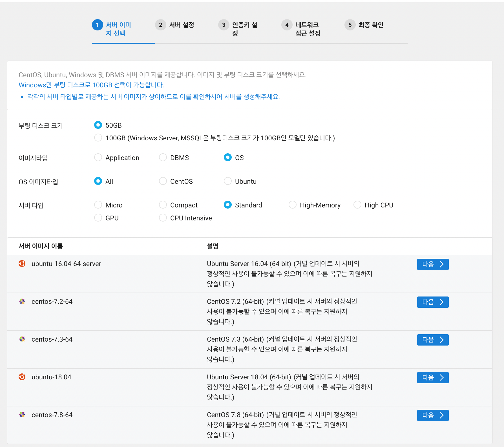
본 게시물에서는 Micro, ubuntu-18.04로 진행 해보겠습니다.
서버 타입을 Micro로 바꾸고 ubuntu-18.04를 선택합니다.
nCloud에서는 Micro 서버를 1년간 무료로 제공해준다.
서버의 속도가 생각보다 많이 느리니 답답하면 좀 더 상위 타입으로 바꿔보자.
- 부팅 디스크 크기 : 생성할 서버의 용량
- 이미지타입
- Application : jenkins, tensorflow 등 기본 프로그램과 함께 제공
- DBMS : mysql, redis 등 기본 DB와 함께 제공
- OS : 선택한 OS만 제공
- 서버 타입 : Micro → Compact → Standard로 넘어갈 수록 가격은 비싸지나 서버의 성능 또한 좋아진다.
1.2. 서버 설정
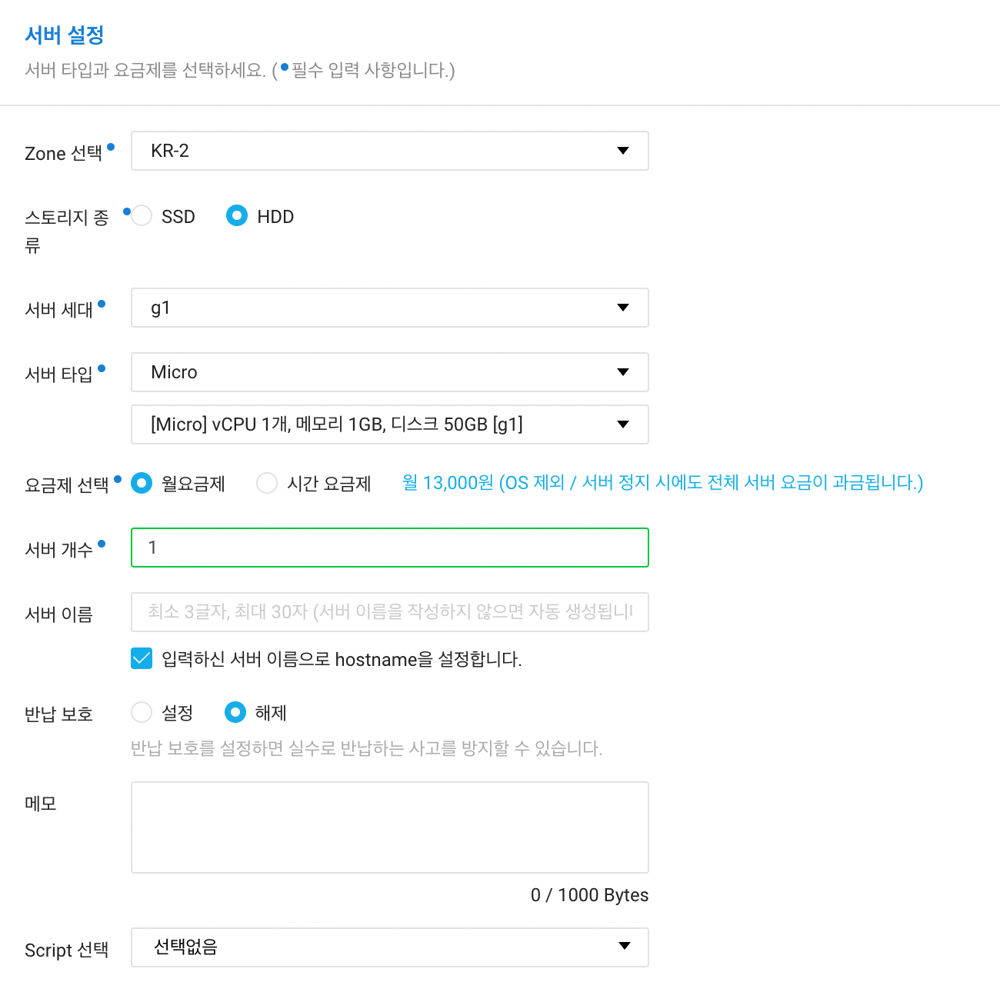
- Zone : KR-2
- 국가 단위의 리전 내에 물리적으로 분리되어 존재하는 데이터센터 및 네트워크를 의미
- KR-1이 KR-2보다 먼저 만들어졌음
- 무엇을 선택하든 큰 차이는 없음
- 스토리지 종류 : HDD
- 요금제 : 월 요금제 혹은 시간 요금제 선택
- 서버 개수 : 1대 (Micro 서버는 1대로 한정)
- 서버 이름 : 원하는 이름 설정
- 반납 보호 : 설정 시에 실수로 반납하는 사고 방지 가능
- Script 선택 : 서버 생성 시 실행될 스크립트 파일 로드 가능
1.3. 인증키 설정
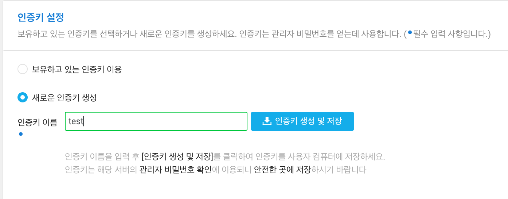
인증키 이름을 입력 후 생성 및 저장 버튼을 선택하면, 로컬에 .pem 파일이 다운로드 됩니다.
이때 발급받은 인증키는 분실하지 않도록 잘 보관합시다.
1.4. 네트워크 접근 설정
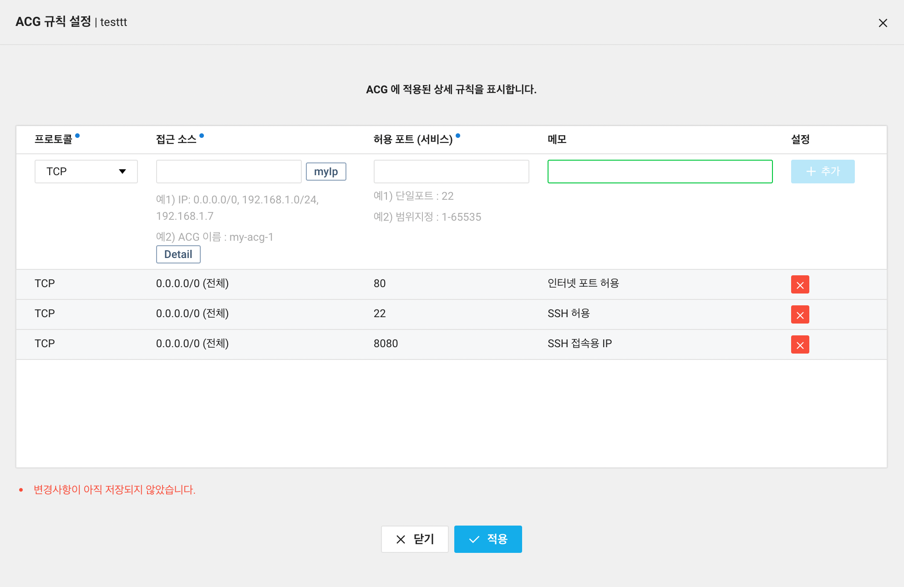
ACG를 새롭게 생성해보겠습니다.
SSH 포트인 22, 인터넷 포트인 80을 기본적으로 뚫어주면 됩니다.
이해가 안 되도 우선 먼저 따라해보는 것을 추천드립니다.
추후에 나올 SSH까지 마치면 이해하기 한결 수월할 것 입니다.
1.5. 최종 확인
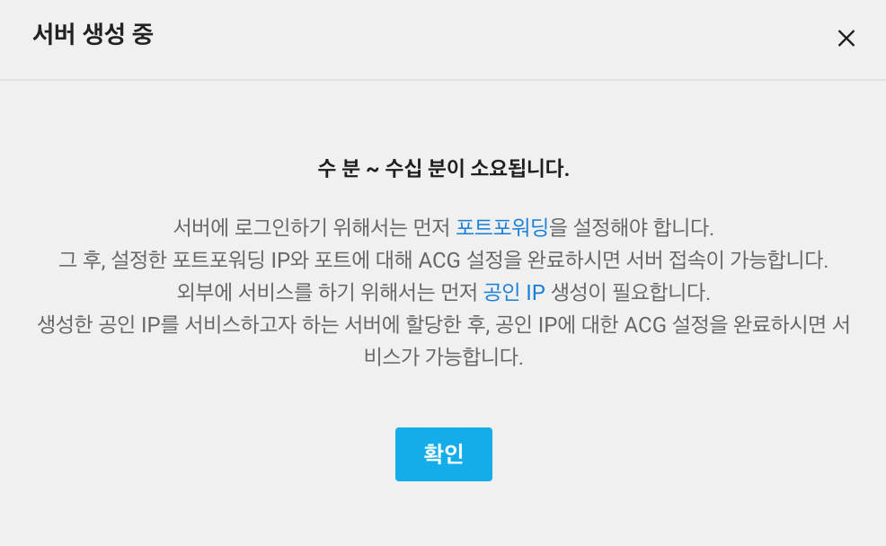
4번까지 완료했다면 이런 팝업이 발생합니다.
서버가 생성되기까지 20분정도 소요됩니다.
그 사이에 포트포워딩과 공인 IP를 설정하러 가봅시다.
2. 공인 IP 발급받기
콘솔 → Services → Compute → Server → Public IP → 공인 IP 신청
신청 절차는 아주 간단합니다. 그냥 안내해주는 대로 발급을 하면 됩니다.
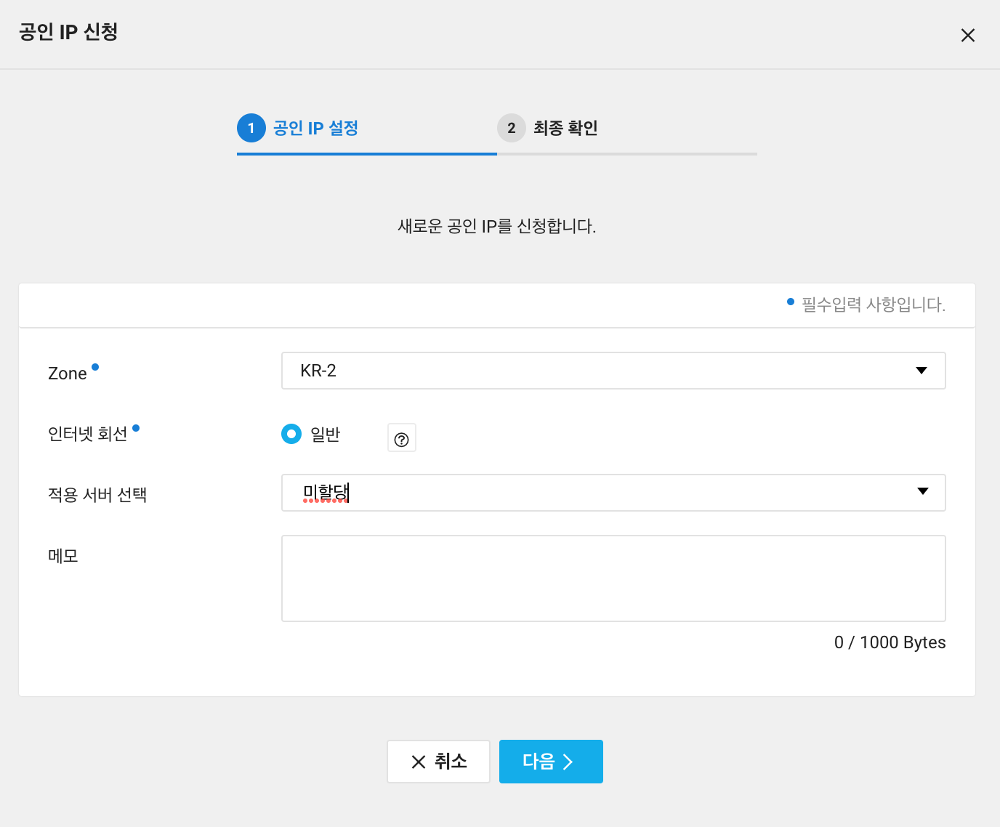
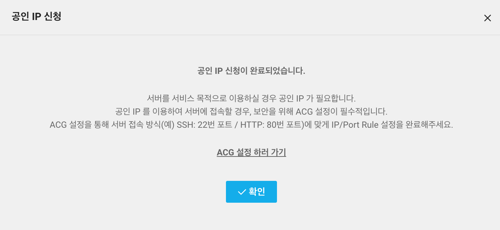
발급이 완료되었다면 콘솔 → Services → Compute → Server -> Server -> 만든 서버 선택 -> 공인 IP 버튼 -> 발급 받은 공인 IP 선택 으로 서버에 공인 IP를 적용시키면 됩니다.
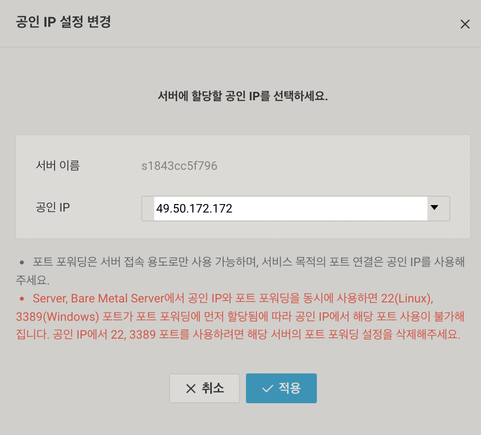
적용을 시키고 나면 이 공인 IP가 여러분 프로젝트의 웹사이트가 된 것입니다.
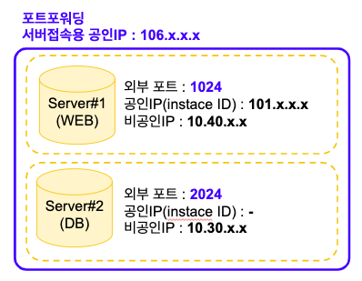
참고로 nCloud에서는 다양한 종류의 IP가 등장합니다.
같은 계정에서 여러 서버를 만들어도 서버접속용 공인IP는 동일합니다.
따라서 포트포워딩을 통해서 각 서버에 접근할 수 있도록 포트를 설정해야 합니다.
즉, 위의 그림에서 #1에는 1024 포트로 SSH 접속을 해야합니다.
(본 게시글의 3. 포트포워딩 설정을 참고)
비슷한 개념으로 나오는 ACG는 서버 내의 포트를 뚫어줄 때 사용합니다.
즉, 1.4. 네트워크 접근 설정 과정 이 #1 서버 내부에서 인터넷 사용을 위해 80, SSH 포트를 위해 22를 뚫어준 것입니다.
- 비공인 IP :
- 서버의 IP
- 서버 접속용 공인 IP
- 서버로 접속할 때 필요한 IP
- 공인 IP
- 전 세계에서 유일한 공인된 주소
- ICANN이 기관이 국가별로 사용할 IP 대역을 관리
- 우리나라는 한국인터넷진흥원(KISA)에서 주소를 관리
3. 포트포워딩 설정
콘솔 → Services → Compute → Server → 포트 포워딩 설정
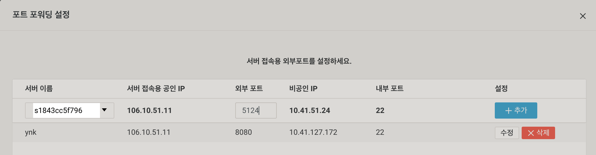
설정창이 표시되면 현재 자신이 보유한 서버를 선택할 수 있고, 해당 서버에 접속하기 위한 포트를 설정해줄 수 있습니다.
내 서버의 비공인 IP 끝자리로 포트를 설정해주었습니다.
포트 포워딩과 ACG의 역할을 잘 구분하여야한다.
위의 창에서는 서버 접속용 공인 IP → 비공인 IP 접속을 위한 포트만 뚫어주기 때문에 서버당 1개씩만 설정할 수 있다.
4. SSL로 접속
서버 접속용 공인 IP를 이용해 내가 만든 서버에 접속할 수 있습니다.
그전에 관리자 비밀번호를 먼저 확인해봅시다.
콘솔 → Services → Compute → Server → 서버 관리 및 설정 변경 → 관리자 비밀번호 확인
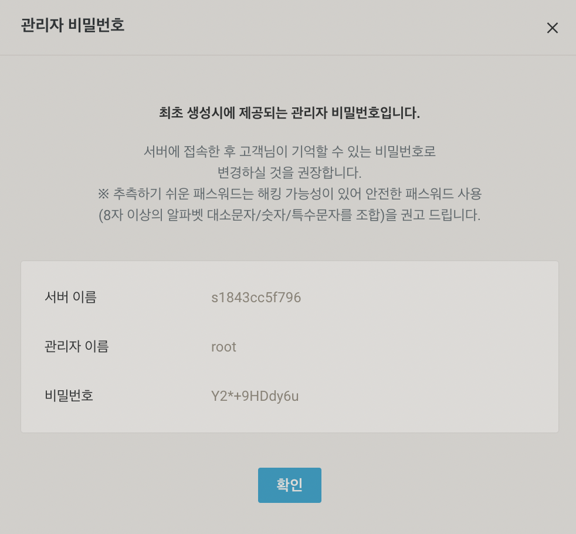
1-3에서 발급받은 .pem을 업로드 시키면 위와 같이 비밀번호가 발급됩니다.
이 때 확인한 관리자 이름과 비밀번호를 잘 기억해두도록 합시다.
터미널을 키고 아래와 같이 입력해보세요.
ssh -l [관리자이름] -p [포트번호] [서버 접속용 공인IP]
ex) ssh -l root -p 5124 106.10.51.11
아래와 같은 창이 입력을 요구한다면 yes를 입력해주시면 됩니다.
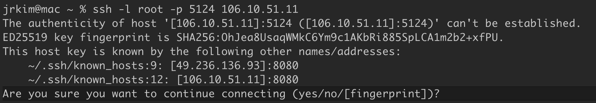
비밀번호를 입력해달라고 하면 아까 외워두었던 비밀번호를 입력합니다.
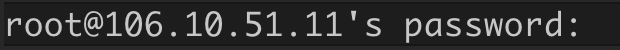
아래와 같은 Welcome 문구가 나타난다면 접속에 성공한 것입니다.
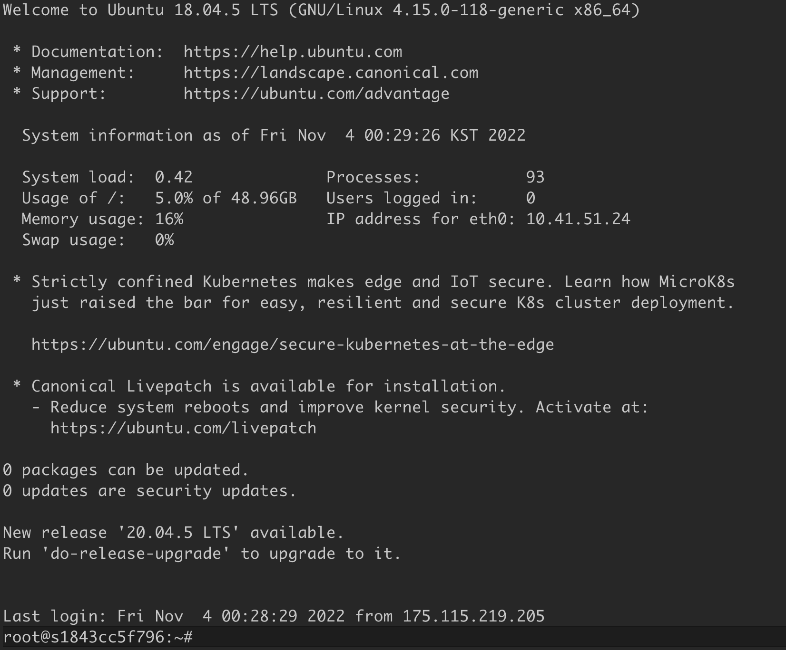
5. 서버에 node.js 설치 후 가동
서버에 node.js와 git을 설치해야합니다.
그래야 git으로부터 프로젝트를 가져와 node로 실행을 시킬 수 있을겁니다.
만약 서버에 node와 git이 기본적으로 설치되어 있다면 git clone을 이용하여 프로젝트를 다운로드 받고 실행하면 됩니다.
아래 명령어들을 차례대로 입력해봅시다.
node.js 설치
- curl 설치
sudo apt-get install -y curl
- nvm 스크립트 설치
curl -o- https://raw.githubusercontent.com/nvm-sh/nvm/v0.37.2/install.sh | bash
- nvm 스크립트를 사용하기 위한 source 명령어
source ~/.bashrc
- 설치 가능한 nodejs 버전 확인
nvm list-remote
- nodejs 설치
nvm install v16.16.0
- node 버전 확인
node - v;
GIT 설치
sudo apt-get install git
6. ACG를 이용한 포트 개방
이제 이 단계만 끝나면 공인 IP를 이용해서 프로젝트를 서비스할 수 있게 됩니다.
우리 프로젝트에서 사용하는 3000번 포트를 열어줘보도록 합시다.
콘솔 → Services → Compute → Server → ACG
생성할 때 만들었던 ACG를 선택하고 ACG 설정을 누르면 됩니다.
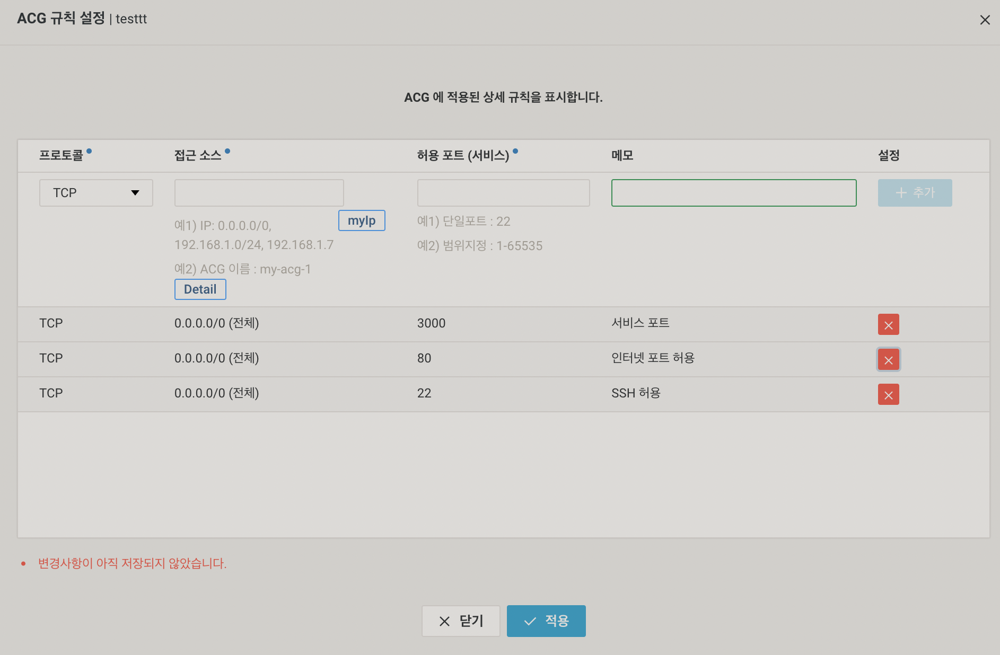
IP는 모든 IP에서 접근할 수 있도록 0.0.0.0/0 로 설정하고, 포트는 3000번으로 설정합니다.
👏👏👏👏👏
이제 http://[공인IP]:3000 으로 접속해보면 프로젝트를 확인해볼 수 있습니다.
6. 도메인 세팅
무료로 도메인을 제공해주는 업체를 이용해도 되고, 유료로 구매를 해도 됩니다.
필자는 가비아를 이용하여 도메인을 구매 해보았습니다.
구매한 도메인의 관리 페이지에 들어가 아래와 같이 네임서버를 설정합니다.
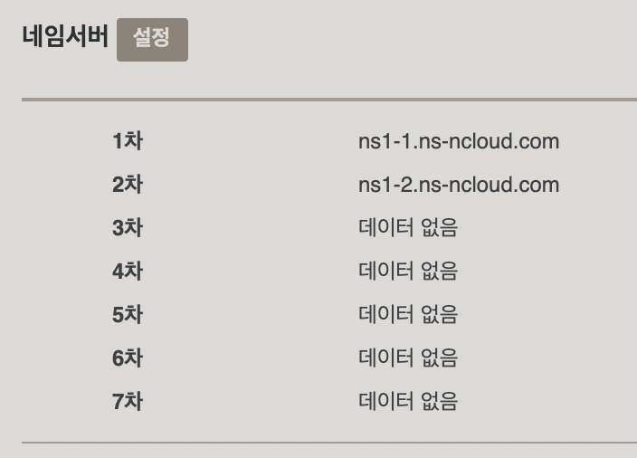
도메인 업체마다 등록하는 방법은 상이하다
이제 마지막 단계만 남았습니다!!
콘솔 → Services → Networking → Global DNS → 도메인 추가
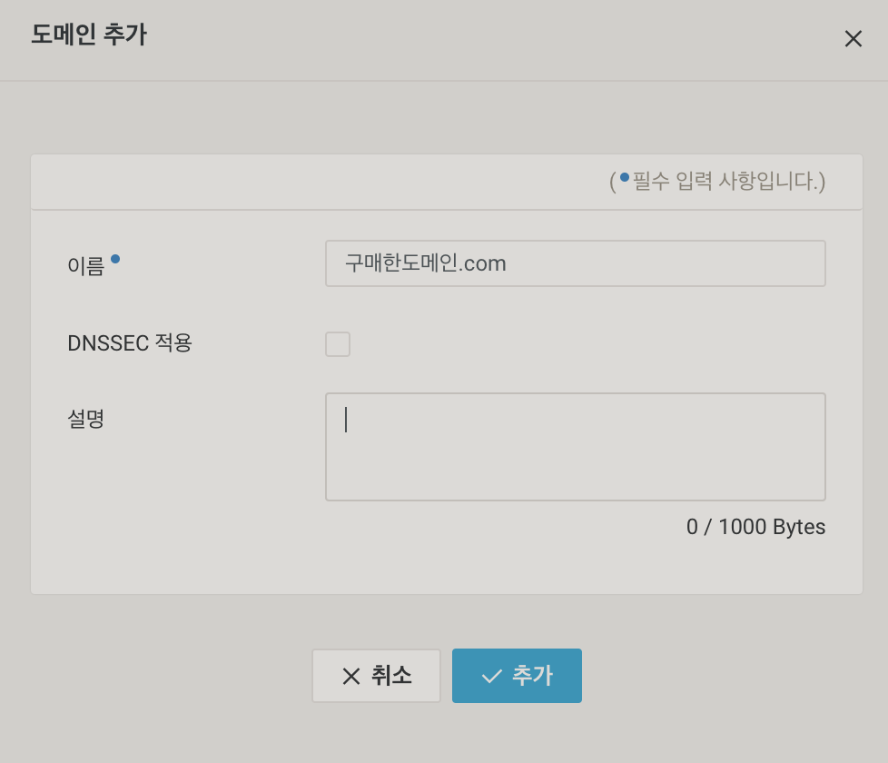
이름에 본인이 구매한 도메인을 입력합니다.
DNSSEC은 데이터 위변조 공격을 방지하기 위한 기술이다. 해당 게시물에서는 적용하지 않도록 하겠다. 좀 더 자세한 내용은 여기를 참고해보도록 하자.
짝짝짝~! 고생하셨습니다~ 이제 모든 설정이 완료됐습니다.
하루정도지나면 정상적으로 본인이 등록한 도메인으로 프로젝트를 사용해볼 수 있을 것입니다.